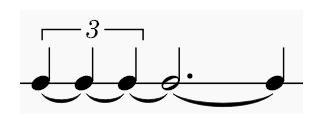

1. 例题：这串音符共占多少时值？

答案：2 + 3 + 1 = 6 拍。
更严谨地说，总长度是 6 个普通四分音符的时值；只有在“四分音符为一拍”的条件下，它才是 6 拍。
更严谨地说，总长度是 6 个普通四分音符的时值；只有在“四分音符为一拍”的条件下，它才是 6 拍。
2. 三连音（Triplet）：为什么三个四分音符只有 2 拍？
上方括号和数字 3 表示“三连音”。最常见的三连音，是在两个同类普通音符原本占用的时间内，均匀演奏三个同类音符，也可以记作“3 代 2”。
三个等时值三连音的总时值 = 两个同类普通音符的总时值
每个三连音音符的实际时值 = 对应普通音符时值 × 2/3
每个三连音音符的实际时值 = 对应普通音符时值 × 2/3
图中三个都是四分音符三连音，因此每个实际占 2/3 拍：
2/3 + 2/3 + 2/3 = 2 拍
| 常见写法 | 每个音的实际时值 | 三音合计（四分音符 = 1 拍） |
|---|---|---|
| 四分音符三连音 | 2/3 拍 | 2 拍 |
| 八分音符三连音 | 1/3 拍 | 1 拍 |
| 十六分音符三连音 | 1/6 拍 | 1/2 拍 |
适用范围：“三个音符的总时值等于其中两个普通音符时值之和”用于通常的等时值、3 代 2 三连音。并不是所有带数字 3 的音组都必须由三个相同音值的音组成，也不能把这句话机械套到其他连音符上。
注：上面“3 代 2”的说明是常见三连音换算规则；目前未在这两份教材中确认到单独阐述此规则的精确段落，因此此处只提供相关的节奏章节作为背景阅读，而不将其当作直接引文。
3. 附点音符：为什么附点二分音符是 3 拍？
单附点使原音符时值增加一半，计算式为“原时值 × 3/2”。普通二分音符 = 2 个四分音符的时值，因此：
附点二分音符 = 2 + 2 × 1/2 = 3 拍
要特别注意：图中的附点位于空心符头右侧，它不是延长音记号（fermata），也不是三连音上的数字 3。
4. 延音线（Tie）：为什么还要把它们加起来？
图中所有符头处在同一高度，下面的弧线逐个连接音高相同的相邻音符，因此这里是延音线（tie）：演奏时持续同一个音、不在每个连接点重新发音，但记谱总时值仍是各部分时值相加。
它和连音线（slur）不能混为一谈：连音线用于连贯演奏，可以跨不同音高；延音线则用于连接同音高并合并持续时值。
核心区分：三连音改变每个音的实际占时；附点增加原音符的音值；延音线不改变这些占时的计算规则，而是把它们连接成一段持续的声音。
5. 按从左到右的顺序计算
- 前三个四分音符：属于四分音符三连音，“三个占两个”的时值，所以合计 2 拍。
- 第四个音：空心符头、带符干、右侧有附点，是附点二分音符；2 + 1 = 3 拍。
- 第五个音：普通四分音符，计 1 拍。
- 结合延音线：2 + 3 + 1 = 6 拍。所有音同高且彼此延续，听起来是一段连续六拍的长音。
总时值 = 3 × (2/3) + (2 × 3/2) + 1 = 6（个四分音符时值）
6. “6 拍”和“6 个四分音符时值”始终一样吗？
不始终一样。音符写定后，总时值可以用“四分音符时值”这一固定单位说明；说“多少拍”则必须知道一拍对应哪种音符。在四分音符 = 1 拍时是 6 拍；二分音符 = 1 拍时是 3 拍；八分音符 = 1 拍时是 12 拍。
例如《基本乐理进阶》第 6.1 节还提醒，6/8 拍在不同的分析体系中，既可以按八分音符计六拍，也可以按附点四分音符计两拍。读谱时要说明单位拍，不能仅凭音符数量判断拍数。
一句话记忆：三连音“3 代 2”，附点“原值加一半”，延音线“同音高时值相加”；最后先报音符总时值，再根据单位拍换算为拍数。